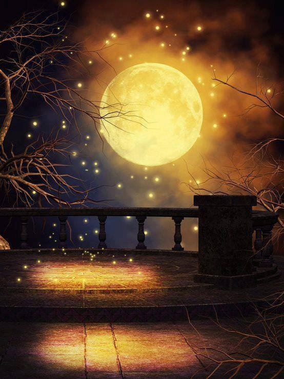

1 Полнолуние. Преддверие волшебства
"Надо умереть при жизни. Время пришло", - прозвучали слова в полусне.
Вчера вечером по обыкновению дремлю в кресле-качалке на уютной веранде соседской дачи, которую мы называем "Фазендой", и пью ароматный черный кофе. Сделала очередной укол тёте Клаве, теперь можно и кофейку с давними знакомыми выпить.
Между тем, в голове вертится фраза, прилипшая ко мне сегодня утром в нашем таинственном лесу: "Надо умереть при жизни".
Что за чертовщина? Странное место наш зачарованный лес. Он пускает не всех. Некоторых он водит кругами и не пропускает дальше "кладбища машин". Раньше в лесу была военная база. До сих пор там валяется куча ржавой арматуры. Гарик шутит, что там однажды высадились инопланетяне и оставили свой мусор сталкерам, как в "Пикнике на обочине" Стругацких. А может и не шутит - он странный тип. Пока я брожу по неведомым дорожкам нашего леса, странное место разговаривает со мной. Порой мне и правда чудится, словно оно живое. Возможно, настолько чужое, что я никогда его не пойму... Может, это и вправду тот самый контакт, о котором мечтали учёные?
Я вновь мысленно перенеслась в лес. Вот я иду по дорожке, словно ёжик в тумане. Мягкий мох пружинит под ногами и расстилается вокруг, словно малахитовый ковер.
Топь-матушка, какая же родная ты мне стала за столько лет...
Иду и размышляю, общаюсь с лесом. Задаюсь вопросом, который мучит меня много лет.
- Хочу узнать, что там за гранью, где заканчивается дискретность и начинается непрерывность, где частица становится волной. Где кончается жизнь тела, но продолжается жизнь сознания. Как после физической смерти сохранить свою память? Иначе.. если умирает сознание или теряется память - это же непростительная растрата, все бессмысленно.
Я забралась в заросли и угодила в паутинку. Эх... разрушила чьё-то творение. По кругу стояли огромные сосны, а в центре - площадка, словно кто-то вырастил заколдованный круг.
- Последние годы я чувствую, как что-то надвигается. Я не могу так жить дальше! Время пришло, некуда тянуть. Мне больше некуда пойти, некому открыться кроме вас. Чувствую, что задыхаюсь в клетке. Я не знаю, что со мной. Чувствую тайну, которая совсем рядом. Та самая тайна, которая была в моих детских снах. Чую, что помимо видимого мира есть какой-то ещё, скрытый от глаз человеческих. Помогите мне. Я должна заглянуть за грань! Я готова рискнуть всем, играть ва-банк.
Тишина... таинственный лес прислушался и замер в ожидании. Мне казалось, что здесь меня слышат мудрые древние существа. А порой не просто слышат, но ещё отвечают, дают советы. Или, может, я сама придумала невидимых друзей, с которыми проводила в лесу долгие дни?
Я ощутила, словно лес протянул ко мне множество рук и ответил мерным гулом:
- Метаморфоза возможна. Но это - очень тяжелое испытание.
В голове всплыла картинка: вначале я - светлое автономное существо, затем заполняюсь неведомой субстанцией, идущей из леса. В меня входят красные огоньки. Мне показалось, что я услышала внутри себя слова:
- Ты станешь нашим проводником. Мы будем творить нашу правду через тебя. Ты теряешь часть своей свободы, но получишь то, что ищешь - наш мир.
- Это же здорово! - я цеплялась за спасительную соломинку.
- Метаморфоза - дело очень серьезное. Даже опасное и болезненное. Тебе придется всё оставить и посвятить себя полностью превращению, вложить в это всю душу, всю энергию. Ты точно этого хочешь?
- Да!
Или мне всё это почудилось? Мой мозг от отчаяния, чтобы защитить меня, сочинил наши диалоги? Но мне так хотелось услышать голос тайны!
- А как будет проходить превращение?
- А ты придумай, напиши сказку, как ты хочешь, чтобы оно случилось. Вселенная тебя услышит и подскажет путь. И тогда случится невероятное, произойдёт чудо. Главное, не бойся по ходу переписывать страницы, потому что вселенная предложит ещё более фантастический вариант, чем тот, который ты ожидаешь.
Вскоре Гарик с Робертом ушли во двор, на веранде остались я и Эдик.
- Чего у тебя хорошего? - спросил Эдик.
В миру Эдик - системный администратор, царь серверов и бог свичей и хабов. И пожалуй, самый адекватный человек на этом "сумасшедшем чаепитии" Фазенды. Как двое технарей, мы с ним прекрасно находим общий язык.
- Три белых сегодня нашла.
- И где же это? - спросил Эдик. Говорят, в этом сезоне грибов нет.
Сам он в лес не заглядывает. Из-за болезни ног он ходит с палочкой.
- Прошла по деревянному мостику у кладбища машин, обошла болото, вышла к бурелому.
- Плохо дело... - хмурится Эдик
- Что такое? - удивляюсь
- Да ничего... в этом месте, говорят, Юленька утопла.
- Однако...
- Там нынче народ не ходит. Не понимаю, почему они тебя пропускают?
- Кто - они? - удивилась я
- Они... - заговорческим шепотом произнес Эдик, - А больше ничего странного не заметила?
Я рассказала ему про странный контакт с иным разумом. Про то, как мне передали изображение: заполняющие меня красные огоньки. И затем я отчетливо ощутила: мышеловка захлопнулась.
- Чужой разум, говоришь... Знаю я этот разум. Как-то слишком они хорошо к тебе относятся. Не мудрено... ты здесь с детства. Всё шляешься по этому лесу. Они к тебе привязались. Ты для них до сих пор ребёнок.
- Кто они? Инопланетные приятели Гарика?
- Да брось! Вурдалаки местные.
Я начала недоуменно моргать. Что за чушь!
- Ни одного не видела.
- Естественно. Они видны лишь на стыке миров.
Эдик говорил, а ко мне вернулось ощущение, что я дошла до точки. Как зверь, загнанный в угол. Клетка давит. Метаморфоза необходима! Время пришло. Надо умереть при жизни, стать свидетелем своей смерти. Пройти этот путь с открытыми глазами. Надо идти... Встать, всё бросить, бежать! Стоп! - я словно проснулась - Какая ещё клетка, что за метаморфоза? Куда идти?
Идти с пустыми руками...
- Вот что я тебе скажу: не ходи пока в лес. Они тебя заприметили. Плохо дело.
- И что будет?
- А что бывает в таких случаях? Их влечёт запах твоей крови. Напьются твоей крови и хана тебе - обратишься!
- А это так ужасно?
Я ощущила лихорадочное волнение от его слов. Внезапно так захотелось отправиться в зачарованный лес, всё оставить позади... Это казалось исцелением, избавлением... Я дошла до края.
- Ничего хорошего. Вечный голод, муки ада...
- Но зато ведь - вечная жизнь! Меня так давно мучает вопрос - зачем все это? Ведь если мы умираем и исчезаем - всё бессмысленно! Оставить что-то после себя? Но зачем? Если и потомки тоже исчезнут бесследно! Нет уж! Как угодно, но я желаю сохранить свою жизнь, свою память! Должен в нашем существовании быть какой-то смысл!
- Сумасшедшая!
- Вообще не верю я в эти бабушкины сказки.
- Этим сказкам уже много лет... Эти ребята - не совсем обычные вурдалаки. Они, так сказать, уже много лет пытаются двигать прогресс рода человеческого. Только все их попытки неудачные - одна веселее другой. Натворят дел, потом огребают.
С другой стороны, на кой ты им нужна? Коли уж не превратили за столько лет, вряд ли возмутся. А погубить могут.
- А если я их попрошу - превратят, сделают меня одной из них?
В эту историю я не поверила, но мне нужна была спасительная нить.
- Даже не думай об этом!
- и откуда у тебя такие сведения?
- Ты же знаешь... У меня связи. Никаких сплетен - всё их первых рук. Что я тебе сказал - держи в секрете. Иначе всем по шапке надают.
- Надо умереть при жизни... - вдруг вырвалось у меня.
Эдик пристально посмотрел на меня:
- Совсем хреново дело! Ты попалась на зов, это гипноз. Беги скорее домой, никуда не выходи несколько дней, как бы не хотелось. Спи в наушниках с музыкой, лучше со снотворным. Иначе точно говорю - хана тебе!
Заинтриговал... Так хотелось увидеть хоть одного вурдалака. Хотя бы одним глазком!
Пришло время идти мерять тёте Клаве давление
Когда я вышла из её комнаты, Эдика уже и след простыл, зато Гарик с Робертом распивали новую бутылку.
Я вышла, не попрощавшись и побрела на свою дачу на соседней улице товарищества.
Бабушка и Алла о чём-то оживлённо спорили на кухне. Меня они не заметили.
За окном пошел дождь. Я забралась на второй этаж в мою комнату, где я могла спрятаться от всех. Много книг, тумбочка, древний шкаф, ночник и кровать под потолком с лесенкой. Часть книг я подарила Максу - они были посвящены поиску смысла в самых экзотических местах. Но неужели на моей земле, где я родилась, нет ничего подобного? Надо ехать в чужие страны, искать шамбалу? Как так? Порой мне кажется, что к тайне я прикасаюсь в зарослях в нашем таинственном лесу.
"Время пришло. Надо выбраться из клетки! Как же тесно мне, тяжело! Надо идти..."
Вновь эти мои чужие мысли.
Алла внизу перешучивается через забор с соседом-Харитоном. Как же ей хочется всем нравиться, притягивать внимание мужчин. Не мудрено: от её роскошной рыжей шевелюры и удивительных нарядов сильному полу трудно отвести взгляд. И даже это не то... есть в ней харизма женская, изюминка.
Увидев, что Алла на улице, я потихоньку спускаюсь. Мне совсем не хочется сегодня слушать её нотации - дескать, будешь так себя вести, помрешь старой девой.
Спускаясь про скрипучей лестнице, думаю:
"Вот стану я вампиром - буду пить кровь всяких гадов, кто вредит хорошим людям, бьёт собак - до смерти загрызу! А как ещё защищать хрупкое, настоящее, если не зубами и когтями? В циничном мире сверхпотребления душа - это лишнее, она не выгодна для экономики"
Я приняла душ и забралась под одеяло. Среди ночи я перешла в контролируемый сон. Внутри сна я позвала:
- Ау! Есть здесь кто-нибудь? Есть кто живой?! Ну или хотя бы мёртвый на худой конец...
А где ещё искать стык миров, где по словам Эдика живут вурдалаки? В дневном мире их не наблюдается. По сути, сон - это единственное место, где я могла встретить чудо.
- Кто-нибудь! Откликнитесь!
Появились существа в плащах с капюшонами, из-под которых были видны огромные сияющие глаза.
- Чего ты хочешь? - прозвучал голос
Я ответила честно:
- У меня есть большая проблема: человеческое тело может прожить от силы несколько десятков лет, а чего дальше будет - я не знаю. Я в тупике: не знаю, как сохранить своё сознание. И, конечно, сохранить память - иначе все бессмысленно. Есть ли какие-нибудь варианты?
Существа молча смотрели на меня.
Потом одно из них приблизилось ко мне. Я ощутила его тепло. У меня появилось невероятное желание прижаться к нему. Существо меня обняло. В душе возникла необъяснимая радость. Тогда существо поцеловало меня в губы. В следующий момент я испугалась: у него не было языка. Вместо этого, во рту его была глубокая бездна, в которую я начала проваливаться, словно Алиса в колодец...
Больше я ничего не помню.
